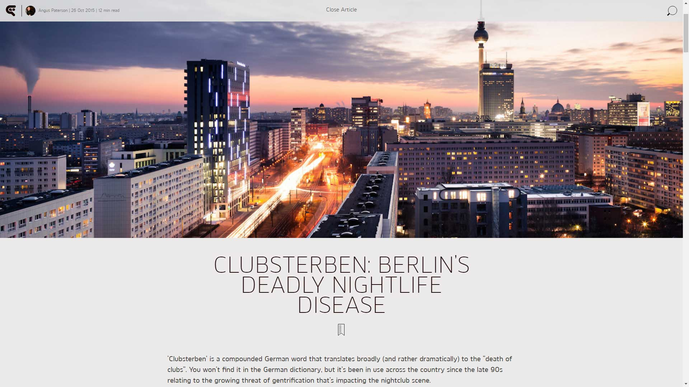
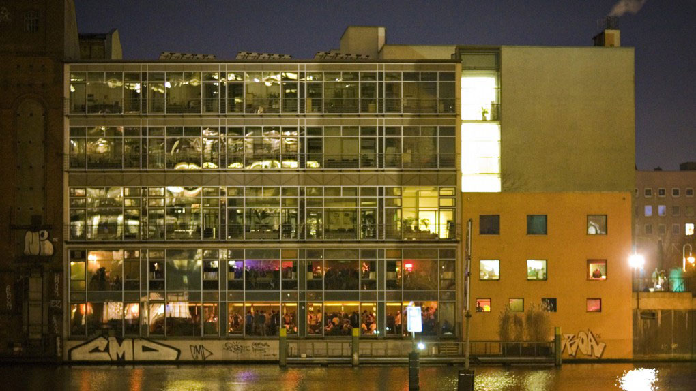
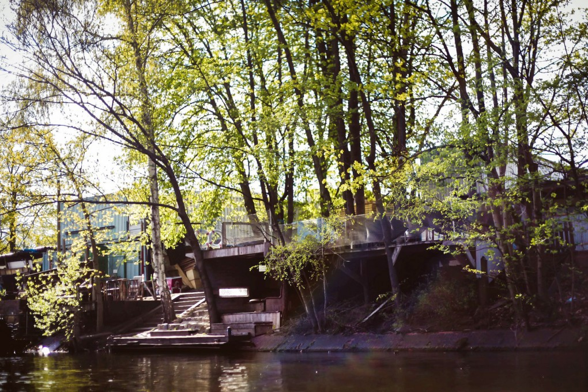
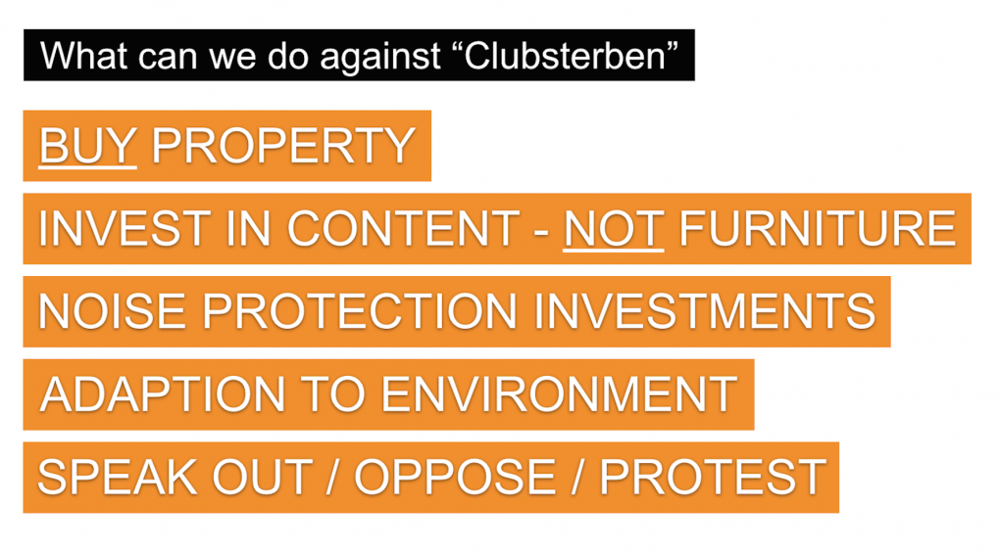

Clubsterben: Berlin’s Deadly Nightlife Disease
{kind=link}

‘Clubsterben’ is a compounded German word that translates broadly (and rather dramatically) to the “death of clubs”. You won’t find it in the German dictionary, but it’s been in use across the country since the late 90s relating to the growing threat of gentrification that’s impacting the nightclub scene.
#clubsterben is a word that holds particular resonance in Berlin, not only because the German capital has one of the world’s most celebrated clubbing cultures, but also because that culture came to life in very particular political, social and economic conditions. Its clubs have been famously defined by their creative use of the space that was left unoccupied after the fall of the Berlin Wall. Except of course, Berlin is no longer the same city that it was in the 90s.
“Like a ghost in the night, the term ‘Clubsterben’ has returned from time to time to haunt Berlin nightlife,” wrote the Berliner Zeitung last month, the city’s main broadsheet daily newspaper. “A city without glamor, without joy after 8 o’clock in the evening, without dance… this was the unanimous forecast from participants in the Berlin nightlife. What has become of it?”
The #clubsterben discussion has picked up heat this year both on Twitter and within the German media, stirred by the permanent closure of clubs like Stattbad Wedding and Neue Heimat on Friedrichshain’s controversial clubbing mile, as well as the temporary closure of venues like Sisyphos and [ipse]. Add to that a growing shift in how authorities treat clubbing culture, and you have a simmering perception the Berlin clubbing scene is in real danger.
“There are too many clubs in Berlin. The opposite of Clubsterben is the case”
“I think a lot has to do with the political climate in Berlin at the moment,” Michail Stangl from Boiler Room told THUMP in September. “The past weeks have seen a lot of media attention for some of the unpleasant sides of Berlin's night life - especially some of the violence and crime that happens at night and is quite often aimed at tourists in the city's hot spots…. the recent national coverage might have shifted some politicians' attention towards Berlin's night life.”
But how dire can it really be in a city with a scene as vibrant as Berlin? Can you talk about the death of clubbing when there are as many as 80 or so venues open during any one weekend, or when authorities and politicians allow so many clubs to operate outside the boundaries of the law in their makeshift industrial locations?
When the musically adventurous Horst Krzbrg closed in 2013, its former owner Johnnie Stieler expressed his scepticism to Berlin paper Die Tageszeitung over the concept of #clubsterben. “There are too many clubs in Berlin. The opposite of Clubsterben is the case,” he said. “When we started five years ago with the club, in Berlin on a Friday or Saturday there were perhaps 30 to 40 parties. This has doubled easily…. There are ten times as many locations as in London.”
{kind=link}

Avoiding Deadly Pitfalls
Last year DJBroadcast spoke with Watergate co-founder and booker Uli Wombacher on the topic of impermanence in clubbing, and he offered his own mediation on some of the pitfalls that can lead to #clubsterben.
"If you want to stay in a place for a long time, you must be part of the community"
“When promoters rent places planned to be refurbished in three or four years, they cannot complain if they have to leave at some point. If it was a temporary location, then you don’t have the right to insist on keeping it. Some feel something is being taken away from them, but it was never meant to be a lifetime thing. That is something people sometimes tend to forget.” It turns out that avoiding #clubsterben is a matter of the clubs coming out of the shadows and entering a dialogue with the establishment, as well as becoming a part of it, in order to survive.
“What we’re doing is something that only a small percentage of people understand,” he said. “The rest wouldn’t have a clue what clubbing is, what nightlife is, what staying up to the next day means, what enthusiasm for electronic music means. So it’s crucial to have a good relationship with your neighbours, because you’re always in the weaker position. If you want to stay in a place for a long time, you must be part of the community… instead of being the freak.”
The Berlin Night Mayor
Clubcommission Berlin is an organisation that was founded in 2000, at a time when the notion of #clubsterben weighed heavily. It was a period when several clubs, many of which operated outside of the law, were being raided and closed by the local police. DJBroadcast spoke with Lutz Leichsenring, the press officer for Clubcommission Berlin, about the differences in 2015’s clubbing climate.
While it might be a stretch to say the clubbing community has become part of the establishment, what is different is that the city now actually recognises clubs as a legitimate form of culture. This is distinct from other cities where clubbing truly is in a sickly state of disrepair. London for instance, a city with a proud legacy, is still reeling from the news that half of the nation’s clubs have closed since 2005. Or Sydney, Australia, where it’s been declared “the night time economy is finished", after the city’s nightlife was devastated by notorious ‘lockout laws’.
“This is definitely true, and it has changed a lot in the past ten years,” Leichsenring says of his city’s clubs, which enjoy a cosier relationship with the establishment, in a relative sense. “When we started, I met with a lot of politicians and I made tours to their districts, I showed them the clubs and explained a lot to them. And it’s all worth the explanation, because if you’re not in the scene, you view clubbing as pubcrawls, beer bikes, discos… it’s all the one thing. It’s all entertainment in the form of partying, and it’s something you either want or you don’t.”
{kind=link}
Leichsenring points to the example of Berghain as a club that did the proper thing in its early years of meeting with the stakeholders in its local community. “There’s Ostbahnhof Metro, there’s Deutsche Bahn, and everybody who has real estate buildings there. So they negotiated with them, and they talked with them. Many clubs might feel that they’re too cool to do this… but this just isn’t working anymore. Because you don’t have the same amount of hidden spaces that you had 10 to 15 years ago.”
There are examples where clubs were able to pull a Lazarus, and rise again from the grim clutches of #clubsterben. The closure of open-air paradise Sisyphos was cause for concern in summer 2014, though it turns out it was only a brief sojourn, with the former East Berlin factory reopening by Christmas as a fully legitimate space. And similarly, [ipse] in Kreuzberg was forced to close after questions were raised over the adjunct spaces it had built without proper council approval. The club insisted on its social networks that it was “far from a final closure” and it was engaged in dialogue with “the competent bodies”. Finally in October it was cautiously announced the club would soon reopen.
Wenn Clubs wirklich sterben
The looming shadow of #clubsterben has felt particularly visceral for Berliners throughout 2015. The main blow came in May with the closure of Stattbad Wedding, the former indoor swimming pool that had famously converted both its emptied out swimming pools and basement boiler room into renowned and popular clubs. Later in September it was announced that Neue Heimat would cease operation on Friday 11th of September, after an inspection by local authorities revealed a lack of fire-suppression systems.
"If you were to build a proper club, it would probably look like a bank. Very clean, with fire exits everywhere"
Clubcommission Berlin confirms the lack of fire protection in Neue Heimat was only one of the many problems that led to its closure, with a complicated assortment of circumstances that subjected the promoters to unreasonably high rents. With the owner proving an unscrupulous stakeholder with little concern for music or the cultural wellbeing of the club, he subsequently declared himself bankrupt, which only complicated matters further.
Meanwhile, it emerged that not only was the closure of Stattbad Wedding related to it lacking the necessary sprinkler system, fire alarms, emergency lighting, and emergency power supply needed to operate; councilman Carsten Spallek confirmed in Der Tagesspiegel the venue was operating with a bar and gallery license, with no actual permit to function as a nightclub. However, Leichsenring asserts there is actually nothing particularly remarkable about the situation of Stattbad Wedding at all.
“Most of the clubs in Berlin are actually like this. There is actually not that many with a 100% proper license. That’s because it just doesn’t work with the German system. If you were to build a proper club, it would probably look like a bank. Very clean, with fire exits everywhere.
“So you can say that in areas like Friedrichshain and Kreuzberg, there is a government that closes it eyes at certain points. So it’s always what they don’t know, that’s fine… However, as more and more people move to Berlin, and there’s more money circulating about, people have a closer look. And this makes our work harder. So in this way we must be more political, be more of a part of things, create more alliances… but also to put the pressure on the wider scene to be more part of this dialogue, because it’s just not working like it did.”
{kind=link}

Taking the fight to #Clubsterben
It’s clear things cannot be the same in Berlin as after the Wall fell, and while once there was an abundance of free space and cheap real estate, the fight is now on to retain these free spaces where creativity can be expressed free of the crippling strain of financial pressure.
“If you go to New York and you talk to artists, it’s all about selling something, because they have to. But you cannot buy creativity, so what the government has to understand is that cheap space encourages experimental creativity, and this is something that influences everything around it. Clubbing culture might not be the biggest employee, it might not be making everybody the most money, but it’s a pulse for the tourism, the growing start-up scene, the fashion and films… people are drawn to Berlin because of the broader creativity of the city.
“We had a mayor years ago who acknowledged what these young people bring to the city… but these are just words. The change has to be somewhere down, in terms of ‘can this club stay here?’ And do we support this club over the real estate developer who puts down million of dollars? These are not decisions that can be made citywide, they’re always individual decisions. So we really have to talk to every administration person, and talk to them what it’s about, and not just them but also the political person above them.”
According to Leichsenring, the biggest collective mistake made by Berlin’s clubbing community is that when the property was cheap, they didn’t buy. Looking at the assortment of clubs and open-airs that pepper the riverside stretch of the Spree for example, it’s an area that’s now of huge economic importance to the city. To protect these spaces, the looming spectre of #clubsterben is an obstacle that needs to be overcome by working within the system.
“Now we must try and fix the mistakes as much as we can, and it’s not getting easier, because more people are moving here and the houses are being built, and the neighbourhood comes closer to where the music is. And we have to think about the next five to ten years, it’s actually not about now or tomorrow or next year, even though the clubs often work like this in their minds.”
Clubcommission Berlin 5-Point Plan to Tackle #clubsterben
{kind=link}

1. Buy Property
“The startups who really make money in this city and sell their businesses for millions, if they want to keep this scene vital, they should buy the property and rent it out to the clubs, the creative community who contribute to this dynamic environment.”
2. Invest In Content, Not Furniture
“If the clubs do not invest in artists, they will not be supporting Berlin clubbing culture in any way. As long as clubs are still advertising with their line-ups, I’m satisfied.”
3. Noise Protection Investments
“If a new house is built next to a club, noise protection is important and we want to see that supported financially by the government.”
4. New Stakeholders Must Adapt To Environment
“The German law of ‘Rücksichtsnahmegebot’ states that new building permits must comply with the existing environment, and we’d like to see this law adhered to with the clubs in mind.”
5. Oppose, Protest and Engage
“Real estate developers in particular need a better understanding of what Berlin is about, and this needs to be moderated by he government. It needs to be them saying, ‘culture in the city is very important, so if you want to support from us then you need to work with these people’.”